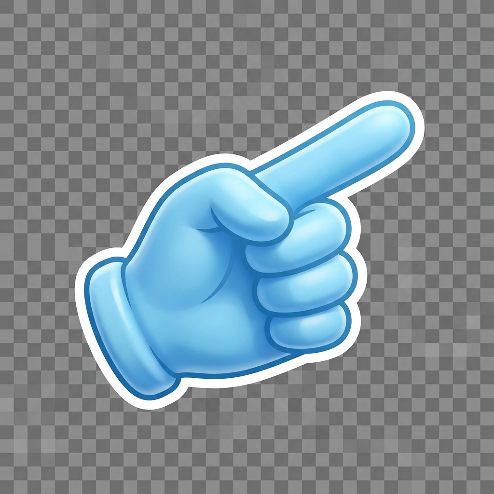
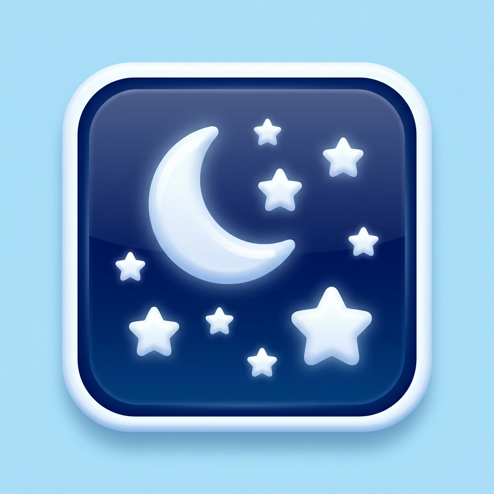

dim7.jp
English
Instagram @music_blue_print
音楽可視化アートプロジェクト。最新の可視化動画をインスタグラムで公開中。
動画を見る
EXPERIMENTS
Clock Harmonizer
?
アナログ時計の3本の針が、12音盤上で連続的なハーモニーを奏でる時計。
Digital Clock Synth
?
デジタル時計の「時:分:秒」の比率を純正律の周波数に変換するシンセ。
Fifths Visualizer
?
アップロードした音声の周波数成分に応じて、五度圏の調性盤が光るビジュアライザ。
ユーモア16診断
?
あなたの「笑いのツボ」を分析し、16タイプに分類する診断コンテンツ。
調とイメージの考察
?
各調性（キー）が持つ固有の色彩や感覚的なイメージについての音楽理論的考察。

天体写真置き場
?
天体望遠鏡やカメラで撮影した、星空、星雲、月などの写真アーカイブ。
もどる
はじめる
Wii
--:--